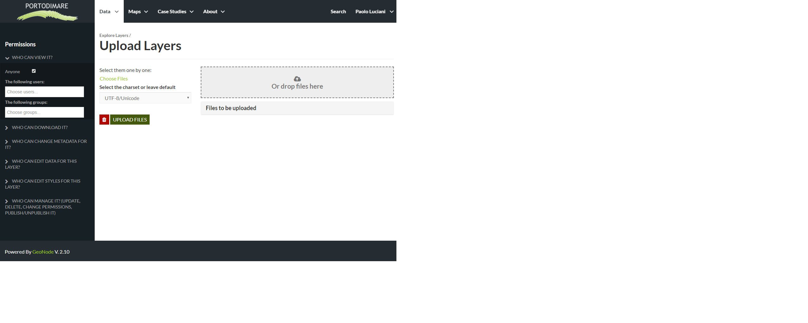

Layers Uploading
Warning
Remember: only authenticated user can upload layers.
The most important resource type in GeoNode is the Layer. A layer represents spatial information so it can be displayed inside a map.
The Layer Uploading page can be reached from the Upload Layer link of the Data drop dow menu in the navigation bar.
There is also an Upload Layers button in the Layers Page.
The Layers Uploading page looks like the one in the picture below.

The Layers Uploading page
Through the Choose Files button (or dropping) you can select files from your disk, make sure they are valid raster or vector spatial data.
Note
Maybe you need to change also the default Permissions settings, according to the visibility you want for the layer on the geoportal.
Remember to assign the permissions to your staff group, so all the group members will have those permissions (see
Changing the Layer Permissions for further information on how to set permissions).
Note
Also remember to fill in the metadata section appropriately (see
Layers Metadata for further information on how to to fill in the metadata).
Select the charset, then click on Upload files to start the process or click Clear to remove all the loaded files form the page.
In this example the foul ares poligons ESRI Shapefile, with all its mandatory files (.shp, .shx, .dbf and .prj), has been chosen.
A progress bar shows the operation made during the layer upload and alerts you when the process is over.
When the process ends click the Layer Info to check the layer has been correctly uploaded.
The next paragraphs explains how to create a layer from scratch, how to set permissions, how to explore the layer properties and how to edit them.